Statistical Physics¶
Microcanonical Ensemble¶
The entropy is equal to:
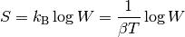
where 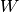 is the micronanonical partition function, the number of microstates within the range of energy.
Grand Canonical Ensemble¶
The partition function for fermions is:
![Z_{gr} = \sum_n e^{-\beta(E_n - \mu N_n)} =
= \left(\prod_\alpha \sum_{n_\alpha=0}^1 \right) e^{-\beta(E_n - \mu N_n)}
=
= \left(\prod_\alpha \sum_{n_\alpha=0}^1 \right)
e^{-\beta\left(\sum_\alpha n_\alpha \epsilon_\alpha
- \mu \sum_\alpha n_\alpha\right)} =
= \left(\prod_\alpha \sum_{n_\alpha=0}^1 \right) \prod_\alpha
e^{-\beta n_\alpha\left(\epsilon_\alpha - \mu\right)} =
= \prod_\alpha \left(\sum_{n_\alpha=0}^1
e^{-\beta n_\alpha\left(\epsilon_\alpha - \mu\right)} \right) =
= \prod_\alpha \left(1 + e^{-\beta (\epsilon_\alpha - \mu)} \right)](../_images/math/da3b5fa7f242329c3773ae12903a61cf60ad63a4.png)
Similarly, for bosons we would get:
![Z_{gr} = \sum_n e^{-\beta(E_n - \mu N_n)} =
= \left(\prod_\alpha \sum_{n_\alpha=0}^\infty \right) e^{-\beta(E_n - \mu N_n)}
=
= \left(\prod_\alpha \sum_{n_\alpha=0}^\infty \right)
e^{-\beta\left(\sum_\alpha n_\alpha \epsilon_\alpha
- \mu \sum_\alpha n_\alpha\right)} =
= \left(\prod_\alpha \sum_{n_\alpha=0}^\infty \right) \prod_\alpha
e^{-\beta n_\alpha\left(\epsilon_\alpha - \mu\right)} =
= \prod_\alpha \left(\sum_{n_\alpha=0}^\infty
e^{-\beta n_\alpha\left(\epsilon_\alpha - \mu\right)} \right) =
= \prod_\alpha \left(1 - e^{-\beta (\epsilon_\alpha - \mu)} \right)^{-1}](../_images/math/620cc13ae8bec40712e4ba58f359fd35bf7e221c.png)
The grand potential for fermions is then equal to:
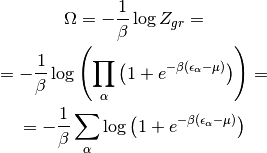
Similarly, the grand potential for bosons is equal to:
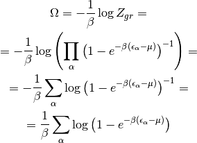
Examples¶
Ideal Gas¶
Ideal gas is simply a system of classical particles, where for a given microstate specified by a set of coordinates 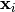 and momenta , the total energy of the microstate is given by the following Hamiltonian:

that is, the particles are non-interacting, each has a mass and a momentum . The canonical partition function is then equal to:
![Z_{can}(T, V, N) = \sum_n e^{-\beta E_n} =
= \int {\d^{3N} x\, \d^{3N} p \over N! (2\pi\hbar)^{3N}}
e^{-\beta H(\mathbf{x}_i, \mathbf{p}_i)} =
= \int {\d^{3N} x\, \d^{3N} p \over N! (2\pi\hbar)^{3N}}
e^{-\beta \sum_{i=1}^N {p_i^2 \over 2 m}} =
= {1\over N!}\left( \int {\d^3 x \d^3 p \over (2\pi\hbar)^3}
e^{-\beta {p^2 \over 2 m}}\right)^N =
= {1\over N!}\left(V \int_0^\infty {4\pi p^2 \d p
\over (2\pi\hbar)^3}
e^{-\beta {p^2 \over 2 m}}\right)^N =
= {1\over N!}\left(V {4\pi \over (2\pi\hbar)^3}
{\sqrt\pi (2m)^{3\over 2}\over 4 \beta^{3\over2}}
\right)^N =
= {1\over N!}\left(
\left(m\over2\pi\hbar^2\beta\right)^{3\over2} V\right)^N\,,](../_images/math/9a0da9c7699682a8ee42c556e751e26ab1e604df.png)
where we used the following integral:
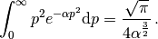
The Helmholtz free energy is then equal to:
![F(T, V, N) = -{1\over\beta} \log Z_{can}(T, V, N) =
= -{1\over\beta} \log\left( {1\over N!} \left(
\left(m\over2\pi\hbar^2\beta\right)^{3\over2} V\right)^N\right) =
= {N\over\beta} \left({\log N!\over N} - \log \left(
\left(m\over2\pi\hbar^2\beta\right)^{3\over2} V\right)\right) =
= {N\over\beta} \left(\log N - 1 + O\left(\log N\over N\right)
- \log \left(
\left(m\over2\pi\hbar^2\beta\right)^{3\over2} V\right)\right) =
= {N\over\beta} \left(
- \log \left( \left(m\over2\pi\hbar^2\beta\right)^{3\over2}
{V e \over N}\right) + O\left(\log N\over N\right) \right) =
= {N\over\beta} \left({3\over2}
- \log \left( \left(m\over2\pi\hbar^2\beta\right)^{3\over2}
{V e^{5\over2} \over N}\right) + O\left(\log N\over N\right) \right) =
= N k_\mathrm{B} T \left({3\over2}
- \log \left( {V T^{3\over2} \over N
\left(2\pi\hbar^2\over m k_\mathrm{B}e^{5\over3}\right)^{3\over2}
}\right) + O\left(\log N\over N\right) \right)\,,](../_images/math/3f6967a1ac6c8804ca1da16471008e7159dced99.png)
where we used the Stirling’s approximation for 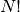. For large  this is
equal to the Helmholtz free energy of the ideal gas (see Ideal Gas):
this is
equal to the Helmholtz free energy of the ideal gas (see Ideal Gas):
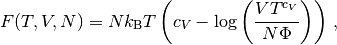
with 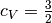 and 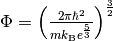. See that section where all other thermodynamic properties are derived from it.
We can also start from the grand canonical partition function:
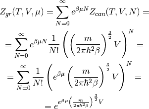
And the grand potential is:
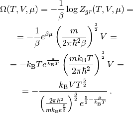
This is equal to the grand potential of an ideal gas:
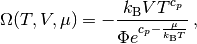
with 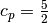 and
.
The thermodynamics section then shows that the corresponding Helmholtz free
energy is the same as we obtained above from the canonical ensemble. Note that
we also obtained the same  as before.
as before.